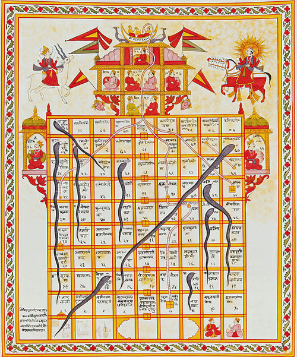
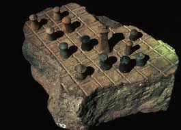

Some Board Games
Board games offer a fantastic way to socialize, strategize, and have fun, whether you're a casual player or a seasoned enthusiast. They range from simple, family-friendly options like Candy Land to more complex strategy games such as Catan or Pandemic. Many board games introduce strategic thinking, problem-solving, and social interaction in an engaging way. Lets see some 2 games
1. Snake And Ladder

Snakes and Ladders is a classic board game for two or more players, originating in ancient India as "Moksha Patam". Players race each other to the finish (usually square 100) by rolling a die and moving their tokens accordingly. The board is filled with ladders that propel you forward and snakes that send you backward, adding elements of chance and consequence.
A small youtube video to understand how this game works.
2. Chess

Chess is a two-player strategy board game played on an 8x8 grid with 64 squares. Each player controls 16 pieces: one king, one queen, two rooks, two bishops, two knights, and eight pawns. The goal is to checkmate the opponent's king, meaning it is under immediate attack (in "check") and there is no way to remove it from attack on the next move.
Video to understand how to play chess